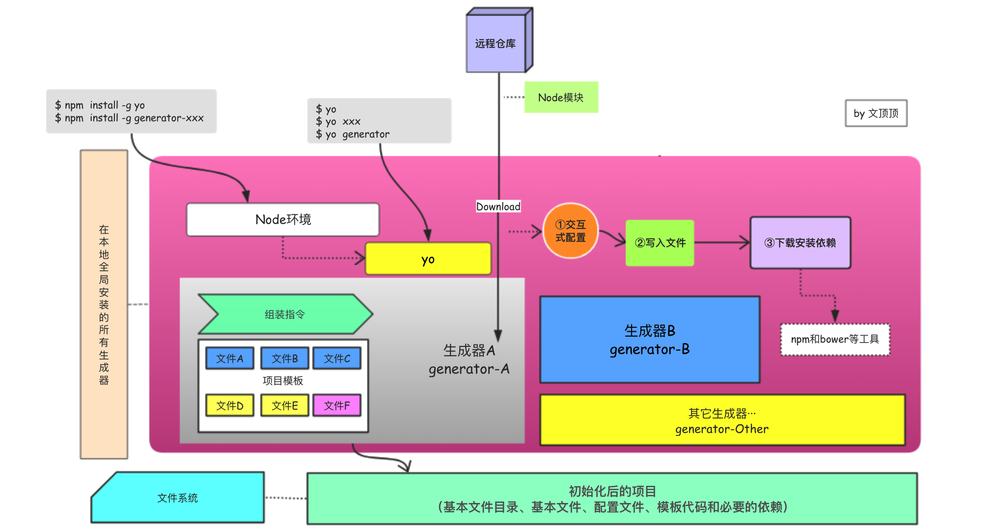
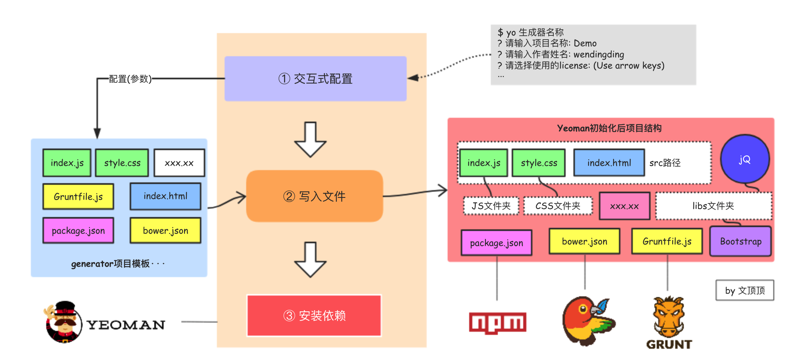

前端工程化系列[06] Yeoman脚手架核心机制

❏ Yeoman脚手架工具的价值讨论
❏ generator[生成器]的内部结构
❏ generator[生成器]的项目模板
❏ Yeoman脚手架工具的核心运转机制
❏ Yeoman 的主要组装流程
Yeoman这样的脚手架工具解决了什么问题？
所有新事物都不是凭空产生的，它们的出现总有某些内在的驱动力。一项新技术，一个新工具的出现更是如此。不知道从什么时候开始起，我接触新事物新技术以及某些工具的时候，总愿意多花点时间想一想它出现的原因是什么？因为时间、精力等等这些东西都很宝贵，IT从业人员对这些资源尤其敏感，所以新技术或者新工具的出现我认为有几种情况：
- 已有的技术或工具存在缺陷，作者们靠自己的才学推出**
更完美的替代方案** - 已有的技术或工具无法解决既定的需求，作者们探索出**
解决问题的技术方案** - 纯粹闲的蛋疼（这种情况一般比较少见）
现在，我们来研究下Yeoman的价值，或者说Yeoman出现的意义是什么？Yeoman的出现解决了什么样的问题？
我们假设有这样的开发场景：公司的开发团队，基于某些特定的技术栈已经完成了项目A的开发和上线等工作，项目A的基本情况如下
技术栈：JavaScript + HTML + CSS + Bootstrap + jQuery
工作流：npm（包管理工具） + bower（下载器） + grunt
版本管理工具：Git
项目整体目录结构（简化后）
1 | . |
因为项目A已经上线发布，现在公司要求着手开展新的项目B，经过需求评审和技术选型后，新项目B采用的工作流和项目A保持一致，技术栈在原有的基础上尝试使用TypeScript来处理脚本部分引入Vue框架，其它部分保持不变。我们发现项目A和项目B它们的结构基本上是一致的（比如项目的目录就够，都需要拥有Gruntfile.js和package.json等文件），但是有些部分又不太一样，比如package.json文件中的项目名称、开发依赖等。
这个时候，我们在对项目B进行初始化的方式可以尝试以下操作方式：
- 方案① 从0开始创建目录结构，集成工作流配置开发环境
- 方案② 从项目A中拷贝目录结构和固定文件，对于不同的部分一个个修改
如果我们采用方案① 你会发现这个过程你在初始化项目A的时候就已经做过了，是重复性的工作，毫无技术含量但是又费时费力。
如果我们采用方案② 你会发现要修改的文件有些多，每个文件要改的字段也比较多，而且容易遗漏总是调不通会出现各种问题，心烦意乱。
如果你会使用Yeoman脚手架工具的话，那么对于上面的开发场景你就会多一个方案③，在使用方案③来初始化项目B的时候，你只需要动动手指在终端中输入$ yo 生成器名称再使用交互方式简单配置某些特定值，初始化的工作就完成了。这就是Yeoman的价值所在，初始化项目的时候你不必再把自己沉入到琐碎重复无技术成长的费力工作中，也不必总是像个机器人般进入到拷贝-粘贴-修改这样无止境的循环中。脚手架工具是那么的简单直接和高效，你甚至可以省出点加班的时间来看世界杯了 : )
我知道有一些杠精要出来喷了。“解决这种初始化问题不用搞的这么复杂，我完全可以把项目结构和固定不变的部分抽取出来托管到gitHub仓库，要初始化项目的时候 $ git clone一下不就好了吗？”
说的很有道理，但是clone下来的仓库虽然结构和必要文件已经准备好了，但很多文件是不是还得修改？那你会顶回来“难道使用Yeoman初始化就不需要修改了吗？” 当然也要修改，不过就算是修改那改起来也很有趣味还So快！
我要求太太…太高，实在谁也看不上？没关系，generator这家伙还可以私人订制，你完全可以根据自己的需求来定制需要的generator，你一高兴甚至还能把它发布到社区造福全人类。
Yeoman-generator的内部结构
搞清楚 generator的价值所在和应用场景之后，我们就可以开始谈论generator相关的话题了，前面介绍过Yeoman脚手架工具的作用是帮助我们依据特定的技术栈需求来初始化项目，在安装了yo工具之后，只需要在终端中使用类似$ yo generator--xx的命令先安装对应的generator然后再$ yo xx搭建即可。至于如何找到匹配当前技术选型的generator，可以去官网的generator列表搜索，这些生成器中有很大一部分来自于对应框架的作者或者Yeoman官方团队，质量有保证且更新很及时。当然，我们也可以创建自己的generator并发布。关于如何创建自己的generator，我们放到另一篇文章Yeoman脚手架生成器创建来解决。
简单说Yeoman做的工作其实就是根据当前的生成器（generator）来复制固定的项目模板文件到新项目中，而新项目中的某些文件需要配置，这部分工作由安装时候的交互式指令来完成（相当于传递参数给模板文件）。
generator主要由**组装指令和项目模板**两部分组成。
组装指令
Yeoman generator中的generators/app/index.js文件是整个生成器的核心部分，该文件用于告知Yeoman该如何来组织并搭建项目，我们可以在该文件中设置初始化项目时必要的安装提示和选项来让用户选择，以及每个文件应该如何复制和修改，是否需要加载依赖和Node包等内容。
项目模板
项目模板包括初始化项目需要的所有必须文件。这些文件又可以简单的划分为**固定文件、灵活文件、可选文件和依赖文件。所谓固定文件就是在每个初始项目中都一模一样的文件，譬如index.js、style.css等文件，在具体处理的时候这些文件只需要简单复制即可。灵活文件指的是那些需要根据用户选择来做简单修改然后才能复制的文件，譬如index.html文件（title等信息需根据用户输入来指定）。对于可选文件来说，它们并不是必须的，譬如某些基础框架有的项目中需要，有的项目中也许并不需要，这部分文件的处理方式需要交给用户来决定**。
项目模板文件的类别
前面已经介绍过了Yeoman生成器的组成部分主要是组装指令和项目模板。对于整个Yeman脚手架工具来说，项目模板这部分就相当于是搭建脚手架需要用到的原材料，而组装指令用来决定和控制所有的具体行动是什么。
现在我们开始深入的来讨论项目模板这部分内容，需要先明白的是“能够满足所有需求的万能的项目模板是不存在的”。因为这世界上每个项目组，每个产品甚至每个人的需求(要求)都各有不同。所以，在实践中你必须要对当前项目的需求和采用的技术栈有深入的理解，这样你才能知道目标项目的目录结构会是什么样的? 哪些文件是必不可少的。
如果你的项目和采用的技术栈比较大众化，那么搜索一个合适的generator基本就能满足需求，拿来主义即可。如果你的项目不管结构还是所采用的技术看上去都那么的非凡和特别，那么就多花一点点时间创建个自己的generator吧，如果你需要处理多个这样的项目，那就更应该了。在创建或者理解generator的时候，我们可以根据前面对项目模板文件的划分情况来区别对待不同的文件。
固定文件
固定文件是在每个项目中初始内容都一样的必要文件。
比如我们可能总是会把代码的结构划分为src、build和dist三个目录，在src目录下面拥有js、css和lib文件目录，index.js和style.css等文件。这些文件都是必要的，刚开始的时候可能是空的或者只有几行简单的代码。这些文件的特点是，在使用组装指令操作(通常是复制-移动)这些文件的时候，不需要对它们进行任何的修改。
灵活文件
灵活文件和固定文件差不多，也是初始化项目所必须的，但不同的项目中这些文件的内容也会稍有不同，这些不同之处可能很细微(比如仅仅是名字、协议这些)，也可能差异巨大。比如，我们常用的构建工作流中的bower.json和package.json文件，它们是必不可少的，但是它们都需要当前项目的项目名称和协议等信息才能正常工作。像这样的灵活文件还有index.html，在这个文件中的title标签中应该使用当前项目的名称。
灵活文件中的部分内容需要在安装该生成器的时候，由用户交互式配置输入的信息来进行设定。
可选文件
可选文件并不是搭建初始化项目时所必须的文件，如果没有那么没关系，如果有那似乎更好。这些一般在用户交互式配置的时候，以是否题的方式交由用户决定，譬如是否使用less 是否安装Bootstrap等。
依赖文件
依赖文件指的是某些常用的框架、插件或者是Node模块，这些文件并不需要你在项目模板文件中提供，然后通过组装指令去一个个复制。因为基本上成熟的项目中都会使用既定的工作流(主要包括依赖和包的下载、项目的自动化构建等)，所以我们完全只需要在package.json或者bower.json等文件中设置好依赖即可，然后在组装指令的相关代码中通过this.installDependencies（）类似的代码来调用npm或者是bower执行install命令即可。
Yeoman脚手架运转的核心机制
当您为项目准备好(搜索或自己创建)合适的generator之后，就可以用它们来搭建项目了。generator的执行需要在终端中使用yo命令来操作。yo是Yeoman的核心命令，主要用来连接生成器和项目结构。我们可以把yo命令理解为generator的执行器，它知道怎么找到对应的generator，也知道该如何执行它们。
在使用yo命令行工具和生成器来初始化项目之前，需要先把指定的生成器(generator)下载安装到本地（如果是自己创建的生成器，那么可以通过$ npm link命令以软连接的方式生成一个全局的npm包，我的是mac OSX系统，生成的npm包会保存在/usr/local/lib/node_modules/路径，如果使用的是别人发布的generator，那么请使用$ npm install -g generator-xxx的方式来安装）。
这里需要注意的是yo命令行工具主要负责前期工作，在使用的时候它主要检查当前安装的generator有哪些，指定的generator是否能够正常工作，如果能，那么它就会调用generator的组装指令，把剩下部分的工作交接给generator来完成。generator接管项目的组装流程之后，会按app/index.js中的要求来处理文件的复制等工作。
下面给出脚手架工具初始化项目时的核心流程。

这里对yo的主要命令进行简单说明
$ yo 执行该命令的时候，yo会搜索并列出所有本地可用的生成器$ yo 生成器名称 比如对于generator-typescript生成器，那么执行的命令就是$ yo typescript。该命令会先检查enerator-typescript生成器是否可用。如果可用，那么就接着以 ①交互式配置 ② 写入文件 ③ 下载安装依赖的顺序来执行组装指令。
Yeoman的主要组装流程
组装指令是用来让Yeoman创建项目所需文件的一系列具体的命令(代码)。典型的组装流程分为三个步骤：

① 交互式配置。这个步骤通过向用户提问或直接输入配置信息来完成模板传参。
② 写入文件。把项目模板中的指定文件复制到新项目的指定目录中。
③ 安装依赖。下载并安装所有保存在bower.json和package.json文件中的依赖和Node模块。
① 交互式配置
Yeoman在执行生成器的时候，首先会执行安装提示以交互式的方式来询问用户，目的是为了获取生成器所需要的一些参数，比如项目的名称、作者、使用的开原协议以及是否安装和使用某些组件等。
这部分功能，需要使用到inquirer包，这个包的作用是生成选项来让用户选择。下面给出代码示例：
1 | prompting() { |
我们可以看到在代码中，这些交互式配置都由prompts来进行维护，prompts是一个对象数组，数组中的每个元素对象就代表着一个具体的安装提示，在使用yo命令运行该生成器的时候，它的执行情况如下：
1 |
|
prompts中的每个对象元素就代表着一个安装提示，上面代码一共提供了四个安装提示。每个对象中的type属性用于表明交互的类型，其中输入项目名称和作者姓名是input型的,表示接收用户的输入，相当于填空题。选择使用的license是list型的，它提供了多个选项供用户选择，您可以认为这种类型是单选题。是否需要使用bootStrap框架是confirm型的，默认为false，如果需要安装那么需要输入YES，这相当于是非题。
交互式配置过程中用户做出的所有选择和输入都会被保存到this.props对象中，可以通过访问this.props.isIncludeBootstrap属性来确定是否需要安装Bootstrap。
message属性保存是每一条安装提示的提示信息。name属性是最重要的属性之一，它作为key用来访问用户的选择结果。default属性保存的是默认值，即当用户跳过当前安装提示的时候，name对应的value值将使用default中保存的默认值来设置。
② 写入文件
写入文件这个过程会把项目模板复制到指定的目录中，如果是固定文件那么就直接拷贝，如果是灵活文件那么还需要把某些参数传递给指定的模板文件。这个过程在代码中由writing() 函数体现，另外系统还提供了两个函数（fs.copyTpl和fs.copy）用来执行具体的操作。
1 | writing() { |
fs.copy方法会把指定文件复制到目标路径。
fs.copyTpl方法会先传递参数给模板文件，经过模板引擎处理后再进行复制。
③ 下载和安装依赖
这个阶段做的事情非常简单，就是调用npm或者是bower来下载并安装依赖和相关的node模块。Yeoman提供了几个对应的方法来处理这个过程。
this.npmInstall()
使用Npm来安装package.json中的依赖和模块，相当于在终端中输入$ npm install指令。
this.bowerInstall()
使用Bower来安装bower.json中的依赖和模块，相当于在终端中输入$ bower install指令。
this.installDependencies()
调用Bower和Npm并且安装package.json和bower.json中依赖的所有模块，相当于先后调用了npmInstall和bowerInstall方法。
最后，为了帮助更好的理解Yeoman组装流程的三个阶段，给出下面的示意图。
